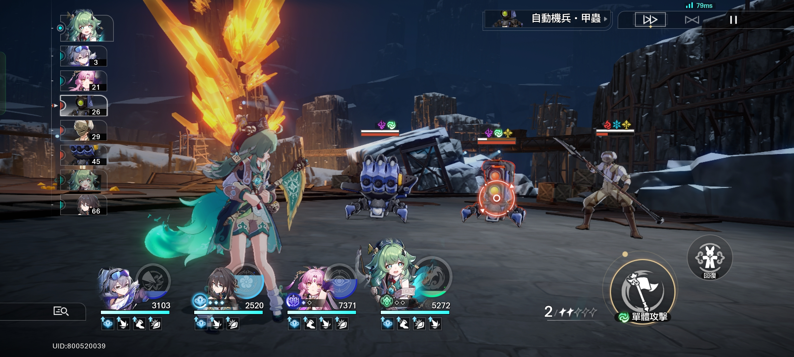

戰略角色扮演遊戲，遊戲並非開放世界，而是採用箱庭探索式的地圖，以星球作為章節區域。
另有名為「模擬宇宙」的Roguelike玩法可獲得高級物資。
每個敵人都有一種或多種元素屬性作為其「弱點」，使用其弱點屬性攻擊可降低敵人的「韌性」，韌性耗盡後將對敵人造成「弱點擊破」效果，使敵人受到額外傷害並遭受減益，一回合後恢復韌性值。
每個角色可在戰鬥中使用兩種技能：「戰技」和「終結技」。戰技需要消耗「戰技點」釋放，發動普通攻擊可獲得戰技點；終結技則是需要清空能量才能使用的絕招，普通攻擊和戰技均可累積能量。
近期更新了高難度的東西讓玩家去挑戰自我。